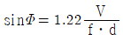
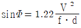
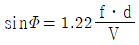
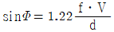
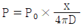
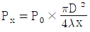

초음파비파괴검사기사 (2016-03-06 기출문제)
1과목: 비파괴검사 개론
1. 다음 중 레이저(laser)와 관계가 없는 비파괴검사법은?
- 광 홀로그램(Optical holography)
- 광탄성 피막 검사(Photoelastic coating test)
- 모아레 검사(Moire test)
- 보아스코프 검사(Borescope test)
(정답률: 62%)

2. 다음 중 모세관속에 있는 액체의 높이와 관련이 먼 것은?
- 밀도
- 표면장력
- 점성
- 접촉각
(정답률: 48%)
3. 방사선투과시험과 비교한 초음파탐상시험의 장점과 거리가 먼 것은?
- 시험체 두께에 대한 영향이 적다.
- 미세한 균열성 결함의 검사에 유리하다.
- 결함의 형태와 종류를 쉽게 알 수 있다.
- 한쪽 면에서만 접근할 수 있어도 탐상이 가능하다.
(정답률: 57%)
4. 누설 시험에서 온도를 측정하는 온도계 중 비접촉식 온도계로 옳은 것은?
- 유리 온도계
- 방사 온도계
- 저항 온도계
- 열전대 온도계
(정답률: 61%)
5. 다음 비파괴검사 중 방사선투과검사와 가장 관계가 먼 것은?
- X선 투과검사
- γ선 투과검사
- 중성자 투과검사
- X선 회절 분석
(정답률: 67%)
6. 가단주철의 특징으로 옳은 것은?
- 담금질 경화성이 없다.
- 경도는 Si 량이 많을수록 낮다.
- 충격석은 높으나, 절삭성이 낮다.
- 백주철의 시멘타이트로부터 흑연을 생성한다.
(정답률: 67%)
7. 고융점 금속에 관한 설명으로 틀린 것은?
- 증기압이 낮다.
- Mo는 체심입방격자를 갖는다.
- 융점이 높으므로 고온강도가 크다.
- W, Mo는 열팽창계수가 높고, 탄성률이 낮다.
(정답률: 54%)
8. 재료의 연성을 알기 위한 것으로 구리판, 알루미늄판 등의 판재를 가압성형하여 변형 능력을 시험하는 것은?
- 마모시험
- 에릭센시험
- 크리프시험
- 스프링시험
(정답률: 50%)
9. 순철의 자기변태와 동소변태를 설명한 것 중 옳은 것은?
- 자기변태는 결정격자가 변하는 변태이다.
- 동소변태란 결정격자가 변하지 않는 변태를 말한다.
- 동소변태점은 A1점이고, 자기변태 점은 923℃이다.
- 동소변태점은 A3점과 A4점이고, 자기변태점은 768℃이다.
(정답률: 60%)
10. Fe-C 평형상태도에서 가장 높은 온도에서 일어나는 변태는?
- 공석변태
- 공정변태
- 포정변태
- 포석변태
(정답률: 58%)
11. 은백색의 금속으로 비중이 약 1.85이며, 중성자를 잘 통과 시키므로 연료의 피복제, 중성자의 반사재나 원자핵분열기에 사용되는 금속은?
- Ge
- Be
- Si
- Te
(정답률: 65%)
12. Cu-Pd 계로 고속, 고하중에 적합한 베어링용 합금의 명칭은?
- 켈멧(Kelmet)
- 크로멜(Chromel)
- 슈퍼인바(Superinvar)
- 백 메탈(Back metal)
(정답률: 73%)
13. 조직이 (α+β)로서 상온에서의 전연성은 낮으나 강도가 높아 기계부품 등으로 사용되는 황동은?
- 60%Cu-40%Zn
- 70%Cu-30%Zn
- 80%Cu-20%Zn
- 95%Cu-5%Zn
(정답률: 63%)
14. 다음 합금 원소 중에서 강의 경화능을 가장 많이 향상시키는 원소는?
- B
- Mo
- Cr
- Cu
(정답률: 39%)
15. 비강도가 크며, 항공우주용 재료에 사용되며, 비중이 Al의 약 2/3 정도 되는 금속은?
- Cd
- Cu
- Mg
- Zn
(정답률: 71%)
16. 불활성 가스 금속 아크 용접의 장점으로 틀린 것은?
- 수동 피복 아크 용접에 비해 용착효율이 높다.
- 불활성 가스 텅스텐 아크 용접에 비해 전류밀도가 높다.
- 탄산가스 아크 용접에 비해 스패터 발생이 적다.
- 불활성 가스 텅스텐 아크 용접에 비해 얇은 판 용접에 적합하다.
(정답률: 54%)
17. 연강용 피복아크 용접봉 심선의 재료로 사용되는 것은?
- 고장력강(high strength steel)
- 저탄소림드강(low carbon rimmed steel)
- 가단주철(malleable cast iron)
- 주강(cast steel)
(정답률: 64%)
18. 이산화탄소 아크용접에서 기공의 발생 원인이 아닌 것은?
- 이산화탄소 가스 유량이 부족하다.
- 노즐에 스패터가 많이 부착되어 있다.
- 공기가 침입해 들어간다.
- 이산화탄소 가스 순도가 매우 높다.
(정답률: 70%)
19. 다음 용접 결함 중 구조상의 결함이 아닌 것은?
- 기공
- 융합 불량
- 언더컷
- 연성 부족
(정답률: 56%)
20. 전류가 높고 아크 길이가 특히 긴 경우에 발생하며, 용접금속 비산에 의한 용접봉의 손실을 초래하는 결함은?
- 기공
- 오버 랩
- 용입 불량
- 스패터
(정답률: 75%)
2과목: 초음파탐상검사 원리
21. 다음 중 초음파탐상시험 시 표면파의 감쇠가 가장 심한 경우는 무엇이 원인인가?
- 곡면
- 두꺼운 접촉 매질
- 얇은 접촉 매질
- 표면 아래 결함
(정답률: 55%)
22. 초음파탐상시험의 탐상방법에 대해 기술한 것으로 옳은 것은?
- 동일 크기의 결함이 있는 경우 초음파탐상시험에 의해서 가장 높은 결함 에코가 검출되는 것은 초음파의 진행방향에 평행한 균열이다.
- 경사각탐상에서 전후주사는 용접선에 대해 수직방향으로 탐촉자를 주사하는 것이다.
- 경사각탐상시험에서는 주로 종파를 사용한다.
- 수직탐상시험에서는 주로 횡파를 사용한다.
(정답률: 57%)
23. 음향방출시험(AE)에서 카이저 효과란?
- 표면 및 내부의 미크로한 탄성적인 정보를 알고자 할 때 사용되는 물성 값이다.
- 소성변형에서 동일 방향으로 변형을 계속하는 경우, 응력을 제거하면 본해 응력의 크기에 이를 때 까지 AE가 관찰되지 않는 현상이다.
- FRP제 용기에서 주로 관찰되는 현상으로 이미 경험한 응력보다 낮은 응력이 작용한 경우에도 AE가 발생하는 현상이다.
- 시험체 표면에서 누설탄성표면파가 발생되는 현상이다.
(정답률: 69%)
24. 초음파탐상검사에서 탐촉자의 감도(transducer sensitivity)란?
- 많은 종류의 결함 감지능력
- 시험표면에 근접된 결함의 검출능력
- 작은 결함의 검출능력
- 큰 결함과 작은 결함의 구분능력
(정답률: 67%)
25. 원거리 음장에서 빔의 분산각을 나타내는 식으로 옳은 것은? (단, φ : 분산각, f : 주파수, V : 속도, d : 진동자직경 이다.)




(정답률: 69%)
26. 좁고 긴 봉에 종파를 입사시키면 종파가 뒷면에 도달하기 전에 빔의 확산에 의해 측면에 빔이 부딪치는데 이러한 경우 어떤 현상이 나타나는가?
- 앞면 에코가 사라진다.
- 백에코(back echo)가 여러 개 나타난다.
- 첫번째 백에코 앞에서 신호가 여러 개 나타난다.
- 종파가 반사하며 일부 횡파로 전환된다.
(정답률: 56%)
27. 초음파탐상검사에서 동일한 크기의 결함이 있는 경우 가장 발경하기 쉬운 결함은?
- 시험재 내부에 있는 구형의 결함
- 초음파의 진행방향에 평행인 판형 결함
- 초음파의 진행방향에 수직인 판형 결함
- 이종 물질의 혼입
(정답률: 82%)
28. 1차 임계각보다 작은 각도로 입사한 종파는 어떤 파를 발생시키는가? (단, 2차 매질은 고체이다.)
- 종파
- 횡파
- 종파 및 횡파
- 표면파 및 횡파
(정답률: 63%)
29. 초음파탐상기의 조절단자 중 시간축 에코의 간격을 넓히거나 좁힐 때 사용하는 것은?
- Sweep Length
- Sweep Delay
- Rejector
- Filter
(정답률: 59%)
30. 초음파탐상시험에서 수직탐상의 감도조정방법에 대해 기술한 것으로 옳은 것은?
- 탐상감도의 결정방법으로는 시험편의 감도조정용 표준구멍으로부터 에코가 정해진 높이가 되도록 탐상기의 감도를 조정하는 방법을 시험편방식이라 한다.
- 시험체와 초음파특성이 동등한 재질의 재료에 인공결함을 가공하고 그 표면상태도 시험체와 동일 정도로 다듬질한 시험편을 표준시험편이라 한다.
- 시험체는 대비시험편에 비해 보통 표면이 거칠기 때문에 탐상면에서 전달손실이 크고 결정입이 조대하기 때문에 산란에 의한 감쇠도 크다.
- 표준시험편을 사용하여 탐상감도를 조정하면 전달손실이나 산란감쇠의 보정은 필요 없다.
(정답률: 65%)
31. 초음파 빔의 강도를 증가시키기 위해 진동자 앞에 음향 렌즈(Acoustical lens)를 부착하여 사용하는 탐촉자는?
- 집속형 수직탐촉자
- 분할형 수직탐촉자
- 표준형 정사각탐촉자
- 가변각 탐촉자
(정답률: 69%)
32. 주물에서 생기는 결함으로 주형 내에 용탕이 충분하게 들어가지 못하고 주물면에서 마주친 경계가 생기는 것을 무엇이라 하는가?
- 스캅(Scarb)
- 콜드셧(Cold shut)
- 균열(Crack)
- 기공(Porosity)
(정답률: 69%)
33. 다음 중 수정진동자에 대한 설명으로 틀린 것은?
- 고온에서 사용이 불가능하다.
- 음향에너지 송신효율이 나쁘다.
- 불필요한 진동양식을 발생한다.
- 파형변이가 쉽게 일어난다.
(정답률: 61%)
34. 초음파 에코의 지시진폭이 거리가 증가함에 따라 지수 함수적으로 감소하는 영역은?
- 불감대 영역
- 근거리음장 영역
- 원거리음장 영역
- 시험편 모든 영역
(정답률: 79%)
35. 알루미늄 내에 초음파 속도가 245000 인치/s일 때 1인치 두께의 알루미늄 판에 수직탐촉자를 놓았을 때 CRT스크린에 저면 반사에 의한 지시가 나타나는데 필요한 시간은? (단, 탐촉자는 수직 탐촉자를 사용하며 s는 초이다.)
- 1/8s
- 4.08ms
- 8.16 μs
- 3.96 μs
(정답률: 47%)
36. 초음파 빔의 지향성에 관한 다음 설명 중 틀린 것은?
- 원형진동자의 지향성은 중심축에 관하여 대칭이다.
- 진동자에서 종파와 횡파가 같이 발생된다면 횡파의 지향성이 더 예리하다.
- 지향성은 파장과 펄스폭에 따라 변한다.
- 직경이 큰 진동자라도 일부분 밖에 진돋하지 않으면 지향성은 둔해 진다.
(정답률: 30%)
37. 초음파 빔을 한 곳으로 집중시켜 사용하기 위한 목적으로 음향렌즈를 사용하는 경우가 있다. 음향렌즈를 사용할 때의 장점이 아닌 것은?
- 작은 결함에 대해 감도가 우수하다.
- 탐상면의 곡률에 대한 영향이 우수하다.
- 한 번에 검사할 수 있는 검사면적이 넓다.
- 분해능이 우수하다
(정답률: 68%)
38. 다음 중 DGS선도를 통해서 알 수 있는 것은?
- 반사파의 크기와 위치를 기준하여 결함의 크기 추정
- 반사파의 크기와 위치를 기준하여 결함의 종류 추정
- 반사파의 크기와 위치를 기준하여 결함의 갯수 추정
- 반사파의 크기와 위치를 기준하여 결함의 분포도 추정
(정답률: 73%)
39. 1초 동안에 발생하는 파동의 주기의 수를 무엇이라 하는가?
- 주파수
- 펄스폭
- 진폭
- 파장
(정답률: 56%)
40. 접촉매질(couplant)에 관한 설명으로 옳지 않은 것은?
- 일반적으로 사용되는 접촉매질로는 글리세린, 물, 기름, 그리스 등이 있다.
- 접촉매질은 피검체와 상호 화학작용이 일어나지 않는 것을 사용하여야 한다.
- 접촉매질의 사용 목적은 탐촉자와 탐상표면 사이의 공기를 제거하기 위함이다.
- 접촉매질은 피검체와의 음향임피던스 차이를 크게 하여 전달이 용이하게 한다.
(정답률: 78%)
3과목: 초음파탐상검사 시험
41. 초음파가 매질 내의 원거리 음장영역의 어느 지점(X)에서의 음압을 나타내는 공식은? (단, PX : 거리 x에서의 음압, x : 진동자로부터의 거리, P0 : 진동자 전면에서의 음압, λ : 파장, D : 진동파의 직경 이다.)


- PX=P0×λ2×D2
- PX=P0×λ×D2
(정답률: 69%)
42. 펄스반사법에 의한 탐상장치를 사용하여 두께 150mm의 봉강을 수직탐촉자로 탐상할 때 어떤 부분에서 저면 에코의 높이가 낮아졌다. 그 원인으로 볼 수 없는 것은?
- 봉강의 두께가 작아졌다.
- 봉강 내부에 흠이 존재한다.
- 저면의 표면 상태가 나쁘다.
- 접촉 표면의 상태가 나쁘다.
(정답률: 65%)
43. 다음 중 초음파 탐상기의 회로가 아닌 것은?
- 멀티플랙스
- 송신부
- 동기부
- 증폭회로
(정답률: 83%)
44. 펄스반사법 초음파탐상장치를 사용하여 용접부를 경사각탐촉자로 탐상할 때 결함 종류의 추정방법에 관한 설명으로 틀린 것은?
- 굴절각이 다른 탐촉자(40˚, 55˚, 70˚)를 사용하여 에코높이의 변화가 5dB 이상이면 면상결함으로 추정
- 진자 및 목돌림 주사시 에코높이의 변화가 크면 면상 결함으로 추정
- 양면 양쪽에서 탐상하여 에코높이의 변화가 크면 구상결함으로 추정
- 탐상기에 나타난 에코의 파형이 톱니모양과 같이 불규칙하게 나타나면 슬래그 혼입 결함으로 추정
(정답률: 49%)
45. 판두께 19mm의 맞대기 용접부를 실측 굴절각 70˚의 탐촉자로 경사각탐상을 할 때 Y1.0s(1스킵거리)은 얼마인가?(오류 신고가 접수된 문제입니다. 반드시 정답과 해설을 확인하시기 바랍니다.)
- 62.5mm
- 68.5mm
- 74.35mm
- 76.5mm
(정답률: 23%)
46. 결함평가를 위해 사용하는 AVG선도에 대한 설명으로 틀린 것은?
- 결함을 구형결함이라 생각하여 그 지름으로 크기를 평가하게 되어 있다.
- 결함까지의 깊이와 결함 에코높이를 평가자료로 이용한다.
- 거리진폭특성곡선 형태로 표시되어진 것이다.
- 일반적인 선도는 주파수, 진동자 크기가 변해도 사용할 수 있도록 되어 있다.
(정답률: 48%)
47. 일반적으로 초음파탐상검사에서 횡파(shear wave)를 이용하여 효과적으로 검사하는 대상은?
- 박판의 두께 측정
- 용접부의 결함검출
- 금속재료의 탄성율 측정
- 후판내부의 적층결함 검출
(정답률: 64%)
48. 펄스반사법 초음파탐상에서 탐촉자를 선정할 때 고려하여야 할 사항이 아닌 것은?
- 초음파 빔의 방향
- 탐촉자의 주파수
- 탐촉자의 크기
- 탐촉자의 밀도
(정답률: 68%)
49. 초음파탐상검사시 동일한 크기의 탐촉자에 주파수를 증가시켰을 때 예상되는 결과는?
- 측면 분해능이 저하된다.
- 빔의 분산이 증가한다.
- 근거리 음장의 길이가 증가한다.
- 탐상시 감쇠가 저하된다.
(정답률: 69%)
50. 초음파 탐상기에서 탐상을 편리하게 하기 위한 전자적 수단으로서 에코가 이 범위에 나타나면 램프나 부저로 결함이 존재하고 있는 것을 알려주는 장치를 무엇이라 하는가?
- DAC회로장치
- 게이트장치
- 리젝션장치
- 게인조정기
(정답률: 65%)
51. 판재의 초음파탐상검사시 적산효과를 설명한 것 중 틀린 것은?
- 판두께가 얇은 경우에 나타나는 현상이다.
- 큰 결함이 존재할 때 나타나는 현상이다.
- 저면반사회수가 많을 때 나타나는 현상이다.
- 감쇠가 작을 때 나타나는 현상이다.
(정답률: 69%)
52. 다음 중 종파의 진행속도가 가장 빠른 물질은?
- 강(Steel)
- 티타늄(Titanium)
- 텅스텐(Tungsten)
- 알루미늄(Aluminum)
(정답률: 84%)
53. 수직탐상에서 탐상면의 거칠기가 탐상감도에 미치는 영향을 극소화하기 위한 방법이 아닌 것은?
- 낮은 주파수의 탐촉자를 사용한다.
- 높은 주파수의 탐촉자를 사용한다.
- 음향 임피던스가 큰 접촉매질을 사용한다.
- 보호막이 있는 탐촉자를 사용한다.
(정답률: 69%)
54. 초음파탐상시험시 결함검출 원리의 설명으로 맞는 것은?
- 초음파의 파장 측정
- 초음파의 에코높이와 위치정보의 측정
- 초음파의 물질 중 음속 측정
- 초음파의 분산도 측정
(정답률: 75%)
55. 수침법에서는 탐촉자와 시험편 전면까지의 거리를 조정해 주어야 하는데 이는 수증을 통과하는 초음파의 전달시간이 어떻게 되도록 하기 위한 조치인가?
- 시험편을 통과하는 초음파의 전달시간이 같아지도록 하기 위한 조치
- 시험편을 통과하는 초음파의 전달시간보다 커지도록 하기 위한 조치
- 시험편을 통과하는 초음파의 전달시간보다 작아지도록 하기 위한 조치
- 시험편을 통과하는 초음파의 기하급수적으로 커지도록 하기 위한 조치
(정답률: 57%)
56. 초음파탐상검사시 탐상도형에 대한 설명으로 틀린 것은?
- 라미네이션은 다중 에코가 생기고 에코가 등간격으로 여러 개 나오는 경우가 많다.
- 구멍 형태의 부식부로부터 나타나는 에코파형은 매우 예리한 파형이다.
- 비금속 개재물에 의해 얻어진 에코는 일반적으로 저면에코도 동시에 나타난다.
- 표면 에코와 저면 에코와의 사이에 에코가 나타나면 라미네이션이나 비금속 개재물 등의 내부결함이라 판단해도 좋다.
(정답률: 62%)
57. 수직탐상시 탐촉자의 주파수가 높을수록 나타나는 현상과 가장 거리가 먼 것은?
- 거친 재질의 결정립에서 산란이 감소한다.
- 파장이 짧아지고, 작은 결함의 검출이 용이하다.
- 지향성이 뚜렷해지며, 중심음파의 집중이 좋아진다.
- 동일 재질일 때 음파의 감도는 동일하나 펄스폭이 감소해 분해능이 증가한다.
(정답률: 66%)
58. 일반적으로 경사각탐촉자의 각도 표시는 어떻게 하는가?
- 횡파가 발생했을 때의 반사각을 표시
- 종파가 발생했을 때의 반사각을 표시
- 발생한 횡파의 굴절각을 표시
- 발생한 횡파의 반사각을 표시
(정답률: 73%)
59. 후판 용접부의 경사각탐상의 경우 2개의 경사각 탐촉자를 용접부의 한쪽에서 전후로 배열하여 하나는 송신용, 하나는 수신용으로 하는 탐상방법은?
- 탠덤 주사
- 두갈래 주사
- 경사평행 주사
- 전후 주사
(정답률: 75%)
60. 다음 대비시험편 중 탠덤 주사 및 두갈래 주사에 주로 사용하는 시험편은?
- RB-4
- RB-A5
- RB-A6
- RB-A8
(정답률: 41%)
4과목: 초음파탐상검사 규격
61. 강 용접부의 초음파탐상 시험방법(KS B 0896)에서 2탐촉자법(탠덤탐상)에 대한 설명으로 가장 적합한 것은?
- 탐촉자를 직접 시험재에 접촉시켜 탐상하는 방법
- 탐촉자를 간접적으로 시험재에 접촉시켜 탐상하는 방법
- 초음파의 송신 및 수신을 1개의 탐촉자로 탐상하는 방법
- 초음파의 송신 및 수신을 각각 다른 탐촉자로 직접 시험재에 접촉시켜 탐상하는 방법
(정답률: 69%)
62. 강 용접부의 초음파탐상 시험방법(KS B 0896)에 따라 탠덤 탐상하는 경우 탐상장치의 조정 및 점검시기는?
- 작업시간 4시간 이내마다
- 작업시간 6시간 이내마다
- 작업시간 8시간 이내마다
- 작업시간 1주일 이내마다
(정답률: 63%)
63. 금속재료의 펄스반사법에 따른 초음파탐상 시험방법 통칙(KS B 0817)에서 규정된 탐상도형표시 기본기호와 설명의 연결이 옳지 않은 것은?
- T : 송신펄스
- F : 흠집에코
- B : 바닥면에코
- S : 측면에코
(정답률: 74%)
64. 알루미늄의 맞대기용접부의 초음파경사각 탐상시험 방법(KS B 0897)의 적용 범위는?
- 두께 5mm 이상
- 두께 10mm 이상
- 두께 20mm 이상
- 두께 20mm 이하
(정답률: 40%)
65. 초음파탐상 시험용 표준시험편(KS B 0831)에서 A3형계 표준시험편의 종류가 아닌 것은?
- STB-A3
- STB-A31
- STB-A33
- STB-A7963
(정답률: 52%)
66. 보일러 및 압력용기의 재료에 대한 초음파탐상 검사(ASME Sec.V Art.5)에서 규정하고 있는 탐상장치의 점검과 교정 시기가 잘못 설명된 것은?
- 검사의 시작 전 후
- 검사자가 교체되었을 때
- 장치기능의 오류가 의심될 때
- 감도 설정 값을 변경 할 때
(정답률: 55%)
67. 강 용접부의 초음파탐상 시험방법(KS B 0896)에서 다음 결함지시의 등급은? (단, 결함지시 : 판두께 80mm, 주파수 2MHz사용, 영역 Ⅳ에서 에코 최대높이 지시 평가에 따른 지시 길이가 18mm이다.)
- 1류
- 2류
- 3류
- 4류
(정답률: 30%)
68. 강 용접부의 초음파탐상 시험방법(KS B 0896)에 따라 판 두께 50mm인 용접부에 대하여 탠덤탐상을 할 때 탐상하는 면과 방향의 설명으로 옳지 않은 것은?
- 맞대기 이음인 경우 한 면 양쪽에서 한다.
- T이음인 경우에는 한 면 한쪽으로 한다.
- 맞대기 이음인 경우 양면 양쪽에서 한다.
- 각이음인 경우 한 면 한쪽에서 한다.
(정답률: 55%)
69. 알루미늄의 맞대기용접부의 초음파경사각 탐상시험방법(KS B 0897)에 따라 탐촉자의 굴절각 측정, 거리 진폭 특성곡선의 작성에 사용하는 시험편은?
- RB-A4 AL
- STB-A1
- STB-A3
- STB-A31
(정답률: 50%)
70. 보일러 및 압력용기의 재료에 대한 초음파탐상 검사(ASME Sec.V Art.5)에서 주조품 검사에 쓰이는 교정시험편을 제작할 때 두께로 알맞은 것은?
- 시험 주조품 두께의 ±15%
- 시험 주조품 두께의 ±20
- 시험 주조품 두께의 ±25%
- 시험 주조품 두께의 ±30%
(정답률: 43%)
71. 강 용접부의 초음파탐상 시험방법(KS B 0896)에 따라 탐촉자를 접촉시키는 부분의 판 두께가 10mm 인 맞대기 용접부를 주파수 2MHz, 진동자 치수 20×20mm 의 탐촉자를 사용하여 경사각 탐상할 때의 흠의 지시 길이를 바르게 설명한 것은?
- 지시의 길이는 2mm의 단위로 측정한다.
- 좌우 주사하여 에코높이가 M선을 넘는 탐촉자 이동거리
- 좌우 주사하여 에코높이가 H선을 넘는 탐촉자 이동거리
- 좌우 주사하여 에코높이가 최대 에코 높이의 1/2)-6dB)을 넘는 탐촉자 이동거리
(정답률: 46%)
72. 보일러 및 압력용기의 재료에 대한 초음파탐상 검사(ASME Sec.V Art.4)의 규정사항으로 옳지 않은 것은?
- 1~5MHz 사이의 주파수에 작동할 수 있는 탐상장비여야 한다.
- 일반적인 탐촉자 이동속도는 150mm/s를 초과해서는 안 된다.
- 접촉법에서 교정시험편과 검사표면간의 온도차는 20℃ 이내이여야 한다.
- 주사감도 레벨은 기준 레벨 설정값보다 최소 6dB 높게 성정되어야 한다.
(정답률: 49%)
73. 강 용접부의 초음파탐상 시험방법(KS B 0896)에 따른 두께가 16mm 인 용접부를 탐상한 결과 L검출레벨 Ⅱ와 Ⅲ에서 5mm 흠의 지시가 검출되었다. 탐상결과의 분류는?
- 1류
- 2류
- 3류
- 4류
(정답률: 38%)
74. 보일러 및 압력용기의 재료에 대한 초음파탐상 검사(ASME Sec.V Art.4)에서 교정 확인 시 감도 설정 값이 그 진폭 값의 얼마가 감소하면 감도교정을 수정하고, 검사 기록서에 수정 값을 기록하는가?
- 20% 또는 2db 감소
- 30% 감소
- 50% 또는 3db 감소
- 10% 감소
(정답률: 63%)
75. 압력용기용 강판의 초음파탐상 검사방법(KS D 0233)에 따라 강판을 수직 탐촉자로 탐상할 때 탐상감도를 조정하기 위하여 STB-N1 25% 시험편을 사용했다면 이 강판의 두께 범위로 옳은 것은?
- 7~10mm
- 13~20mm
- 25~40mm
- 40~60mm
(정답률: 31%)
76. 압력용기 제작기준 규격 강제 부록(ASME Code Sev.Ⅷ Div.1 App.12)에 따라 75mm(3인치) 두께를 갖는 맞대기 용접부를 검사한 결과 다음과 같은 흠이 검출되었을 때 불합격인 지시는?
- 참조기준(reference level)의 50%에 해당하는 12mm 슬래그
- 참조기준의 50%에 해당하는 12mm 기공
- 참조기준의 50%에 해당하는 16m 슬래그
- 참조기준의 25%에 해당하는 12mm 융합불량
(정답률: 66%)
77. 알루미늄의 맞대기용접부의 초음파경사각 탐상시험방법(KS B 0897)에 따라 탐상 후 나타나는 흠의 지시 길이 측정의 설명으로 틀린 것은?
- 최대 에코높이를 나타내는 위치에 탐촉자를 놓고 좌우 주사를 한다.
- A종 흠은 비교적 긴 흠으로 보아 10dB drop법을 사용한다.
- B종 흠은 지정한 평가 레벨(DSC) 10dB drop법을 사용한다.
- C종 흠은 비교적 긴 흠으로 보아 6dB drop법을 사용한다.
(정답률: 54%)
78. 강 용접부의 초음파탐상 시험방법(KS B 0896)에 따라 탐상 시험 시 사용하는 경사각 탐촉자의 입사점 및 굴절각을 조정 및 점검하는 시기는?
- 작업 개시 시 및 작업시간 4시간이내마다
- 작업 개시 시 및 작업시간 8시간이내마다
- 작업 종료 시 및 작업시간 10시간이내마다
- 작업 종료 시 및 작업시간 12시간이내마다
(정답률: 67%)
79. 강 용접부의 초음파탐상 시험방법(KS B 0896)에 의한 경사각 탐상에서 초음파 탐상장치의 점검 항목과 사용 표준시험편의 연결이 틀린 것은?
- 입사점의 측정 : STB-A3
- 측정 범위의 조정 : STB-A1
- 에코 높이 구분선 작성 : STB-A3
- STB 굴절각의 측정 : STB-A1
(정답률: 58%)
80. 강 용접부의 초음파탐상 시험방법(KS B 0896)의 부속서 B(원둘레 이음 용접부의 탐상 방법)에 따라 두께 15mm, 곡률 반지름이 100mm 인 강관의 원둘레이음 용접부를 탐상하려 한다. 다음 중 옳은 것은?
- 대비 시험편의 곡률 반지름은 시험체 곡률 반지름의 1.6배 이상으로 한다.
- 탐상감도 조정은 RB-4을 사용한다.
- 탐촉자의 접촉면은 시험체의 곡률에 맞추어야 한다.
- 사용하는 탐촉자의 공칭 굴절각은 60˚, 45˚을 사용한다.
(정답률: 61%)